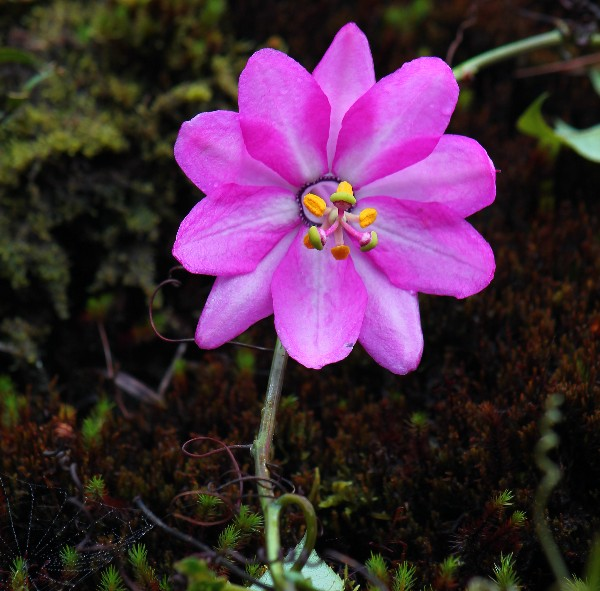
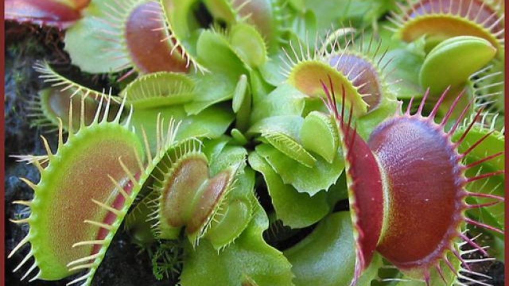

Las plantas son seres vivos, como las personas y el resto de animales, y nos proporcionan alimento con sus diferentes partes comestibles: hojas, frutos, etc., dependiendo del tipo de planta que sea.
Las plantas solo necesitan agua y la luz del sol para crecer, y no todas tiene flores. Ejemplos de aquellas que no producen flores son los helechos, colas de caballo, etc.
En las plantas que presentan flores estas suelen ser llamativas, como las orquídeas. En algunas, las semillas están recubiertas por un fruto que las protege,
como por ejemplo en los manzanos o las encinas.
Las plantas fueron los primeros seres vivos que aparecieron en la Tierra.
Hay árboles muy longevos como las sequoias, que pueden vivir 2000 o 3000 años. Su hábitat natural se encuentra en América y aunque su crecimiento es muy lento,
alcanzan hasta los 122 metros, casi la mitad que la Torre Eiffel, con un grosor de tronco hasta 30 metros.
Tipos de plantas
Las plantas medicinales son aquellas que contienen principios que pueden utilizarse en la curación de enfermedades.
Desde la antigüedad, el hombre ha experimentado con diferentes tipos de hierbas, arbustos o árboles para encontrar la solución a sus problemas de salud.
Las plantas ornamentales son aquellas que se cultivan y se comercializa con propósitos decorativos por sus características estéticas como pueden ser las flores, las hojas, los perfumes, etc.
Las plantas alimenticias son aquellas que son cultivadas por el hombre para cubrir sus necesidades de alimentación, siendo seguramente muy conocidas por cualquiera de nosotros ya que las hemos comprado o consumido en diversos modos.
De esta forma podemos encontrar con especies de cereales, legumbres, frutas, verduras, hortalizas, etc.

Cada año, las cifras dan cuenta de un deterioro y disminución progresivo en la cantidad de especies vegetales existentes. Una amenaza constante no sólo a la biodiversidad vegetal, sino también a los animales que dependen de ellas para sobrevivir.
La primera vez que las plantas fueron incluidas en la Lista Roja de la UICN (Unión Mundial para la Naturaleza) fue durante 1997. Ese año, las cifras revelaron que cerca de 380 especies se
habían extinguido en estado silvestre y casi 370 fueron consideradas como amenazadas. Sin embargo, sólo era una primera aproximación, ya que esta lista incluyó solamente plantas vasculares (helechos, coníferas y plantas que producen flores).
Según la Lista Roja 2007 de la UICN, de las 12.043 plantas clasificadas, 8.447 están consideradas como especies amenazadas. En sectores como América Central y del Sur, África central y occidental y el sudeste asiático, los organismos vegetales endémicos están declinando a una velocidad inesperada.
Amenazas:
Pero si muchos de estos animales desaparecen es, en muchos casos, porque a su hábitat le ocurre lo mismo: un 20% de las 300.000 especies de plantas que conocemos también están en peligro de extinción.
La agricultura y la ganadería intensiva, la urbanización descontrolada y la contaminación han alterado tres cuartas partes de la superficie terrestre según muestra el informe de la ONU, y son las causantes de que la lista de plantas en peligro de extinción sea cada vez más amplia.
Existe una enorme dificultad para evaluar individualmente qué variedades de plantas son las más amenazadas. Quizá la Inteligencia Artificial y el Big Data puedan convertirse en grandes aliados de la detección prematura del peligro de extinción de la flora.
Los bancos de semillas, por su parte, son una interesante herramienta para salvaguardar las plantas fuera de su hábitat natural.
De hecho, el plan de la Estrategia Global para la conservación de Plantas (GSPC) es el de custodiar las semillas del 75% de las especies de plantas amenazadas para 2020,
aunque existen un tipo de simientes llamadas recalcitrantes que no permiten su conservación y la tecnología tendrá que seguir investigando para poder lograr ese ambicioso objetivo.